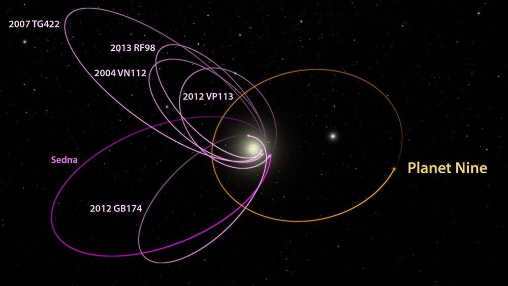
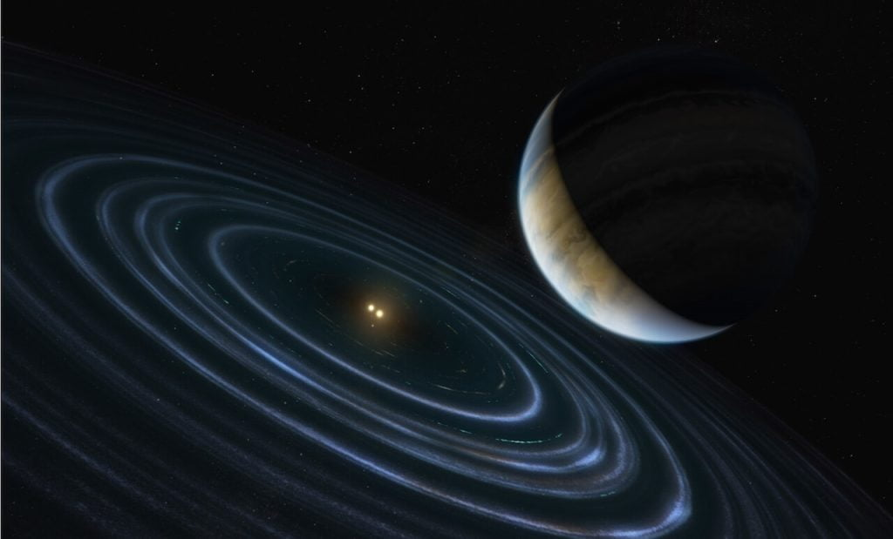

ယခင် ပလူတိုဂြိုလ် (Pluto) ရှိစဉ်ကတော့ ဒီဂြိုလ်ကို ၁၀ ခု မြောက် ဂြိုလ် ဆိုပြီး Planet X လို့ အမည်ပေးခဲ့တာ ဖြစ်ပါတယ်။ ဒါပေမယ့် ပလူတို ဂြိုလ်ကို အဆင့်လျောချ လိုက်ပြီးတဲ့နောက် ဒီ Planet X ဟာလဲ အမှတ် (၉) နဝမမြောက်ဂြိုလ် ဖြစ်လာပါတယ်။ အဲ့သည် အချိန်က စလို့ သူ့ကို Planet Nine လို့ ခေါ်ခဲ့ကြတာပါ။
ဒီဂြိုလ်ကြီးဟာ အရွယ်အစား အလွန်ကြီးမားပြီး ပလူတို ထက် ဝေးတဲ့ နေရာကနေ နေကို ပတ်နေတယ်လို့ နက္ခတ် ပညာရှင်တွေက ယုံကြည် ကြပါတယ်။ ဒီဂြိုလ်ကြီး နေကို တစ်ပါတ် ပတ်မိဖို့ဆို ကမ္ဘာ နှစ်နဲ့ ဆို နှစ်ပေါင်း ၁၀,၀၀၀ ကနေ ၂၀,၀၀၀ လောက်ထိ ကြာမယ်လို့ ယူဆကြပါတယ်။
ဒီဂြိုလ်ကြီးကို ဘယ်သူမှ မမြင်ဖူးကြပါဘူး။ ဒါဆို သူရှိနေတယ်လို့ ဘယ်လို သိလဲ။ ဘာ့ကြောင့် ပညာရှင်တွေ အခိုင်အမာ ယုံကြည်နေ ကြတာလဲ။
ဒီ ဂြိုလ်ကြီး ရှိမယ်လို့ ယုံကြည်ကြတာက ဘာကြောင့်လဲ။
ဒီလို လမ်းကြောင်းလွဲနေရတာကို ဖြစ်စေနိုင်တဲ့ အကြောင်းရင်းက သူတို့အပေါ်မှာ နေနဲ့ ဂြိုလ်ကြီး ၈ လုံးရဲ့ ဆွဲအားအပြင် အခြား ဒြပ်ထုကြီးတဲ့ အရာ တစ်ခုခုရဲ့ ဆွဲအားလဲ သက်ရောက်နေလို့ ဖြစ်တယ်လို့ သိပ္ပံ ပညာရှင် တွေက ကောက်ချက်ဆွဲခဲ့ပါတယ်။ ဒီဆွဲအားကို ဖြစ်စေတဲ့ ကြီးမားတဲ့ အရာဝတ္ထုကြီးကို နဝမ ဂြိုလ် လို့ အမည်ပေးခဲ့ကြပါတယ်။
ဒီ နဝမ ဂြိုလ်ကြီး ရှိတယ်လို့ သံသယ ဖြစ်နေခဲ့တာတော့ ကြာခဲ့ပါပြီ။ ဒါပေမယ့် ဒီ နဝမ ဂြိုလ်နဲ့ ပါတ်သက်လို့ အခုထိ ခိုင်လုံတဲ့ သက်သေ အထောက်အထားကတော့ သိပ်ပြီး ရေရေရာရာ မရှိလှ သေးပါဘူး။
၂၀၁၆ ခုနှစ်က ကာလီဖိုးနီးယား နည်းပညာ တက္ကသိုလ် (California Institute of Technology) က နက္ခတ် ပညာရှင်တွေ ဖြစ်တဲ့ မိုက်ဘရောင်း (Mike Brown) နဲ့ ကွန်စတန်တင်း ဘက်တီဂျင် (Konstantin Batygin) တို့ဟာ ဒီ နဝမဂြိုလ်နဲ့ ပါတ်သက်လို့ အထောက်အထား တစ်ရပ်ကို တင်ပြနိုင်ခဲ့ပါတယ်။
သူတို့ရဲ့ လေ့လာချက်မှာ ဂြိုလ်မွှားလေး (dwarf planet) တစ်လုံးဖြစ်တဲ့ 2012 VP113 ရဲ့ နေပတ်လမ်းကြောင်းဟာ အခြား သူ့လို ဂြိုလ်မွှား ၅ စင်းရဲ့ နေပါတ်လမ်းကြောင်းနဲ့ ထူထူးခြားခြား ဟန်ချက်ညီညီ ဖြစ်နေတာ တွေ့ရပါတယ်။
ဒါကို တိုက်ဆိုင်မှု တစ်ရပ်လို့တော့ ပြောလို့ ရပါတယ်။ ဒါပေမယ့် ဒီလိုမျိုး ဂြိုလ်မွှားလေး ၅ စင်း ဟန်ချက်ညီညီ နေကို ပတ်နေနိုင်ဖို့ဆိုတာ အခြား ဘေးပတ်ဝန်းကျင်က ဆွဲအား မပါဘူး ဆိုရင် ဖြစ်နိုင်ချေက အပုံ ၁၄,၀၀၀ ပုံမှာမှ ၁ ပုံပဲ ရှိပါတယ်တဲ့။
နောက် ၂ နှစ် အကြာ ၂၀၁၈ ခုနှစ်မှာ နောက်ထပ် ဂြိုလ်မွှားတစ်ခု ဖြစ်တဲ့ 2015 BP519 ဟာလဲ ထူးခြားတဲ့ ပါတ်လမ်းကနေ နေကို ပါတ်နေတယ် ဆိုတာ တွေ့ရှိလာရ ပြန်ပါတယ်။ ဒီလို ထူးခြားပြီး ပုံမှန် မဟုတ်တဲ့ ပတ်လမ်းမှာ ပတ်နေဖို့ ဆိုတာက ဘေးက ကြီးမားတဲ့ ဆွဲအားရှိတဲ့ အရာဝတ္ထု တစ်ခုခုရဲ့ အားသက်ရောက်မှု မရှိပဲ မဖြစ်နိုင်ပါဘူး။
အခုထက်ထိ နဝမဂြိုလ်နဲ့ ပါတ်သက်တဲ့ အကောင်းဆုံး အထောက်အထားဟာ အပေါ်က ပြောခဲ့တဲ့ ဂြိုလ်မွှား ၆ လုံးပတ်နေတဲ့ လမ်းကြောင်းပဲ ဖြစ်ပါတယ်။ အောက်ကပုံမှာ ပြထားသလို ဒီဂြိုလ်မွှားတွေ အားလုံးဟာ ရေပြင်ညီ တစ်ခုထဲမှာ ပတ်နေကြတာ ဖြစ်ပါတယ်။ ဒါ့အပြင် သူတို့ ပတ်နေတဲ့ ရေပြင်ညီကလဲ စောင်းနေပါ သေးတယ်။
ဒါ့အပြင် 90377 Sedna ဂြိုလ်မွှား ပတ်နေတဲ့ လမ်းကြောင်းကလဲ သူ့နားမှာ ရှိနေတဲ့ နက်ပ်ကျွန်းဂြိုလ် ဆွဲအားသက်ရောက်မှုကြောင့် ရှိရမယ့်လမ်းကြောင်းကနေ သွေဖည်နေ ပြန်ပါသေးတယ်။ ဒီအချက်က ဒီ ဂြိုလ်မွှားလေးတွေ ဒီလို ထူးခြားတဲ့ ပါတ်လမ်းပေါ် ရောက်နေတာ နဝမဂြိုလ်ရဲ့ ဆွဲအား သက်ရောက်မှုကြောင့်လို့ အချို့က ယူဆကြပါတယ်။

ဆက်စပ် ဆောင်းပါး – Nibiru (သို့) ယုံတမ်း ဂြိုလ်
နဝမဂြိုလ်ကဘယ်လောက်ကြီးမလဲ
ဒီ နဝမဂြိုလ် တစ်ကယ်ရှိတယ်ပဲ ဆိုကြပါစို့။ ဒီဂြိုလ်ရဲ့ ဒြပ်ထုက ကမ္ဘာထက် ကြီးမှာတော့ သေချာပါတယ်။ ကမ္ဘာ့ဒြပ်ထုရဲ့ ၁၀ ဆလောက်ထိ လေးမယ်လို့ ယူဆကြပါတယ်။ သူ့ရဲ့ အချင်းကလဲ ယူရေးနပ်စ် တို့ နက်ပ်ကျွန်း တို့ အရွယ်လောက် ရှိမှာပါ။ဒီ ဂြိုလ်ကြီး ဒီလောက် ဝေးတဲ့ နေရာ ဘာလို့ ရောက်နေတာလဲ ဆိုတာကိုလဲ သိပ္ပံ ပညာရှင်တွေ မရှင်းနိုင်ကြ သေးပါဘူး။ ဖြစ်နိုင်တာ တခုကတော့ မူလက ဒီဲဂြိုလ်ကြီးသည် ကြာသပတေးဂြိုလ် (Jupiter) နဲ့ နက်ပ်ကျွန်း (Neptune) ဂြိုလ်တို့ အကြားမှာ ရှိနေတာပါ။ ဒါပေမယ့် ဒီဂြိုလ်ကြီး နှစ်ခုရဲ့ ဆွဲငင်အား စက်ကွင်းထဲ ရောက်သွားပြီး အဝေးကို လွင့်စင် ထွက်သွားတာ ဖြစ်နိုင်တယ်လို့ အချို့က ယူဆကြပါတယ်။
နောက်ဖြစ်နိုင်တာ တခုကတော့ ဒီ နဝမဂြိုလ်ဟာ ကျွန်တော်တို့ နေအဖွဲ့အစည်း ကနေ ဖြစ်ထွန်းလာတာ မဟုတ်ပဲ အနားကနေ ဖြတ်သွားခဲ့တဲ့ ကြယ်တစင်းရဲ့ ဂြိုလ်ရံလကို နေက ဆွဲယူထားလိုက်တာလဲ ဖြစ်နိုင်ပါသေးတယ်။

ဒီလိုဂြိုလ်မွှားတွေထူးထူးခြားခြာစုနေတဲ့အခြားအကြောင်းတွေရှိလား
ဒီဂြိုလ်မွှားတွေ အခုလို ပုံမှန်မဟုတ်ပဲ ထူးခြားတဲ့ လမ်းကြောင်း ကနေ နေကို ပတ်နေတာ ဒီနဝမဂြိုလ် တစ်ခုထဲကြောင့် လို့တော့ပြောလို့ မရပါဘူး။ အကယ်လို့ ဒီ ဂြိုလ်မွှားတွေ ပတ်နေတဲ့ လမ်းကြောင်းနား ဝန်းကျင်မှာ ဂြိုလ်သိမ် အသေးလေးတွေ အများအပြား ရှိနေမယ် ဆိုရင်လဲ ဒီဂြိုလ်သိမ် တွေရဲ့ ဆွဲအား သက်ရောက်မှုကြောင့် ဒီလို မူမမှန်တဲ့ လမ်းကြောင်း ဖြစ်လာနိုင်ပါသေးတယ်။ဒါမှမဟုတ်ရင်လဲ ဒီနားမှာ Black Hole တွင်းနက် အသေးလေး တစ်လုံး ရှိနေလို့လဲ ဖြစ်နိင်ပါတယ်။
နောက်ဖြစ်နိုင်တာ တစ်ခုက ဘယ်ပြင်ပက အားမှ သက်ရောက်တာ မဟုတ်ပဲ ဒီဂြိုလ်မွှားတွေရဲ့ လမ်းကြောင်းကိုယ်နှိုက်က တည်ငြိမ်မှု မရှိတာကြောင့် ပတ်လမ်း စောင်းသွားတာလဲ ဖြစ်နိုင်ပါသေးတယ်။
ဆက်စပ်ဆောင်းပါး – မစ်ကီးဝေး ဂလက်ဆီထဲက လွင့်မျောနေတဲ့ တွယ်ရာမဲ့ သင်းကွဲဂြိုဟ်များ
ဒါဆိုဒီနဝမဂြိုလ်ရှိမရှိဘယ်လိုသက်သေပြမလဲ
ဒီ နဝမဂြိုလ် တကယ် ရှိတယ် ဆိုရင်တောင်မှ သူ့ကို ရှာတွေ့ဖို့ ဆိုတာက အတော်လေးကို ခဲယဉ်းမှာ ဖြစ်ပါတယ်။ ပညာရှင်တွေရဲ့ တွက်ချက်မှု အရ ဒီ နဝမဂြိုလ်ဟာ နေနဲ့ အဝေးဆုံး တွေ့ရှိထားတဲ့ ဂြိုလ်ဖြစ်တဲ့ နက်ပ်ကျွန်းဂြိုလ်ထက် ၁၀ ဆလောက် ပိုဝေးပါသေးတယ်။ဒီလောက် ဝေးတဲ့ အရပ်မှာ နေရဲ့ အလင်းရောင်ကလဲ မှိန်မှိန်လေးပဲ ရောက်တော့တာပါ။ ဒီတော့ သူ့မျက်နှာပြင်ကနေ ရောင်ပြန်လာမယ့် နေရဲ့ အလင်းရောင်ကို ရှာတွေ့ဖို့ဆိုတာ အတော်လေးကို ခဲယဉ်းပါတယ်။ ဒီ့ထက် ပိုဝေးမယ် ဆိုရင် ပိုလို့တောင်မှ ရှာလို့ ခက်ပါအုံးမယ်။
ဒီလောက်ဝေးတဲ့ အရပ်မှာ ရှိတဲ့ ဂြိုလ်အရွယ် အရာဝတ္ထုတွေကို မြင်တွေ့နိုင်တဲ့ နက္ခတ်ကြည့် မှန်ပြောင်းတွေတော့ ရှိကြပါတယ်။ ဒါပေမယ့် ကောင့်ကင်ကြီးက အကျယ်ကြီး ဆိုတော့ သူ့ကို ရှာတွေ့ဖို့ ဆိုတာ ပထမဆုံး အနေနဲ့ ဒီဂြိုလ် ရှိနိုင်လောက်တဲ့ နေရာတွေကို မှန်ကန်စွာ ခန့်မှန်းနိုင်ဖို့ လိုအပ်ပါတယ်။
ဒီလို ဒီဂြိုလ်ကြီး ရှိနေနိုင်တဲ့ အရပ်ဒေသတွေကို ခန့်မှန်းနိုင်ဖို့ဆို နောက်ထပ် ဂြိုလ်မွှားတွေ အများအပြားရဲ့ သွားရာ လမ်းကြောင်းတွေကို အသေးစိတ် ထောက်လှမ်းရှာဖွေနိုင်ဖို့ အရေးကြီးပါတယ်။
ဒီဂြိုလ်ကြီးကို ရှာမတွေ့ မီ ယခုအချိန်ထိတော့ ကျွန်တော်တို့ရဲ့ နေအဖွဲ့အစည်းဟာ ဂြိုလ် ၈ လုံးနဲ့ စုဖွဲ့ထားတဲ့ အဖွဲ့အစည်း အဖြစ်ပဲ ရှိနေပါသေးတယ်။ အကယ်လို့ ဒီ နဝမဂြိုလ်ကို ရှာမတွေ့ခဲ့ဘူး ဆိုရင်တောင် သူ့ကို ရှာဖွေရင်းနဲ့ နေအဖွဲ့အစည်းနဲ့ ပါတ်သက်ပြီး လှို့ဝှက်ချက် အမြောက်အများကို ရှာဖွေတွေ့ရှိ နိုင်မှာ ဖြစ်တာကြောင့် ဒီ နဝမဂြိုလ် ရှာဖွေရေး လုပ်ငန်းစဉ်ဟာ အရှုံးမရှိတဲ့ လုပ်ငန်းစဉ် လို့ သိပ္ပံပညာရှင်တွေက ယုံကြည်ကြပါတယ်။
Reference: What Is Planet Nine, And Does It Even Exist?